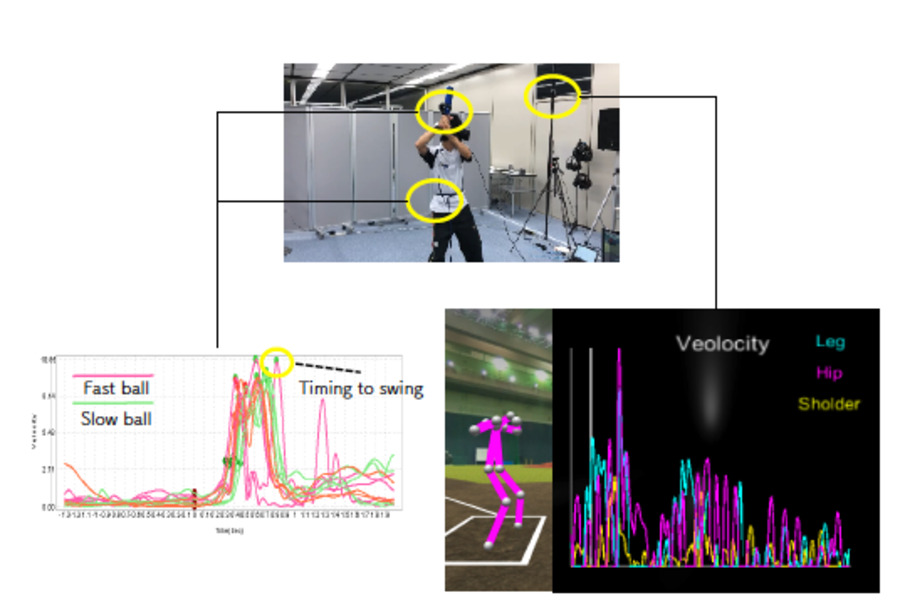
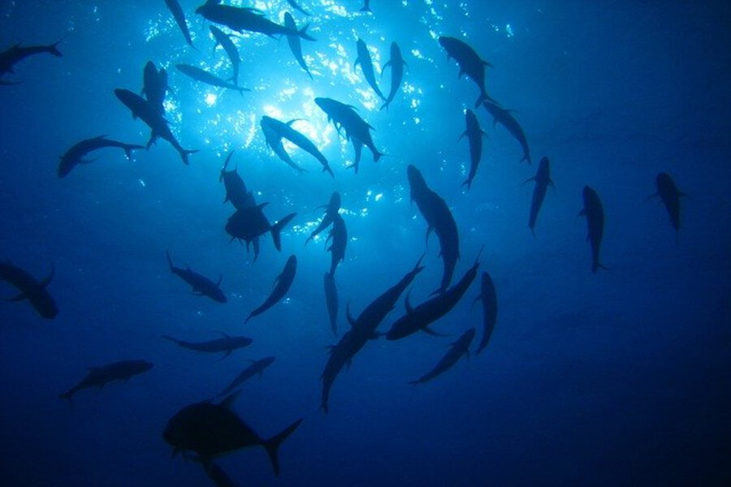

News
1. ARTICLE
I contoributed an article entitled “IoT・AI technologies contributing to sustainable aquaculture. 持続可能な水産養殖を実現する IoT・AI 技術” to a magazine of OplusE.
2. INVITED TALK
I had an invited talk entitled Aquaculture x IoT and AI; Technologies for sustainable aquaculture at organized session in SSII 2021. The presentation material is available from slide share.
3. PAPER
Our paper entitled Structure of Multiple Mirror System From Kaleidoscopic Projections of Single 3D Point was accepted to IEEE Transactions on Pattern Analysis and Machine Intelligence (TPAMI) . The paper is available from IEEE Xplore or aXiv.
Research Interests
1: 3D vision
The 3D vision is one of the most major research fields in computer vision. I’m mainly interested in 3D reconstruction using multi-view geometry and camera calibration for the catadioptric capture system.
2. human analysis
Appearances of humans include the important information for analyzing the human, e.g. what they think, how they move, and so on. I’m interested in analyzing them using computer vision techniques.
3. aquaculture
Enhancing the productivity of aquaculture has a big impact on solving the food problem. Now I’m trying to contribute to this activity using computer vision techniques.